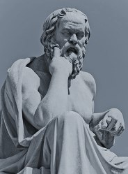
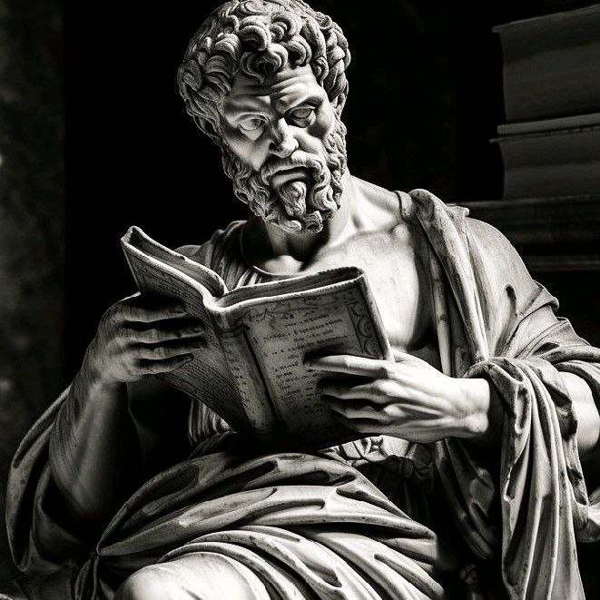
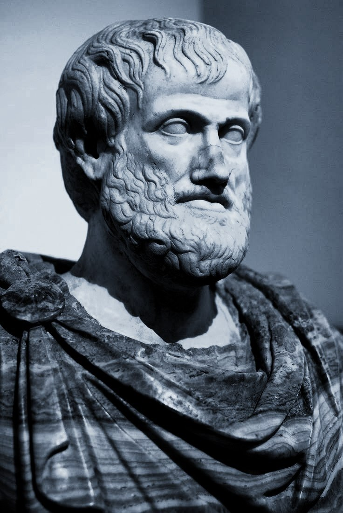

در اینجا میتوانید با فیلسوفان و آثار و ایده های فلسفی آشنا شوید.
سقراط یکی از تاثیرگذارترین فیلسوفان یونان بود که به عنوان پدر فلسفه غرب شناخته میشود و تأثیر زیادی بر فلسفه و تفکر انسانی داشته است.
اطلاعات بیشتر درباره سقراط
افلاطون یکی از بزرگترین فیلسوفان یونان باستان بود که آثار او تأثیر زیادی بر فلسفه غرب داشته است.
اطلاعات بیشتر درباره افلاطون
ارسطو شاگرد افلاطون و یکی از بزرگترین فیلسوفان تاریخ است که در زمینههای مختلفی از جمله منطق، اخلاق و سیاست تأثیرگذار بوده است.
اطلاعات بیشتر درباره ارسطو